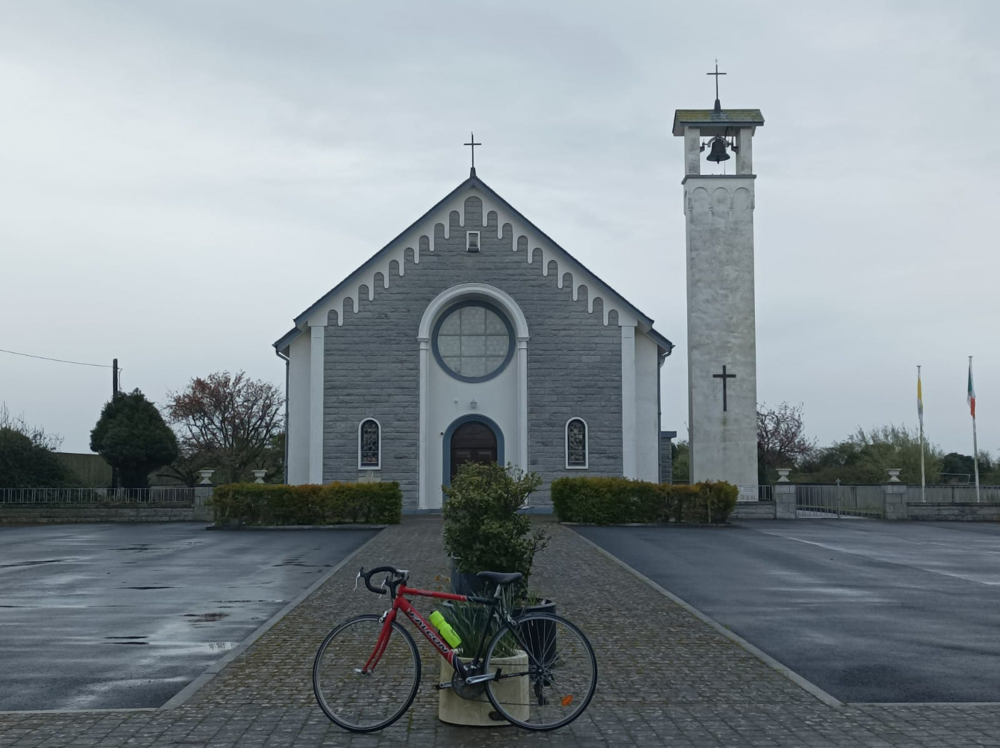
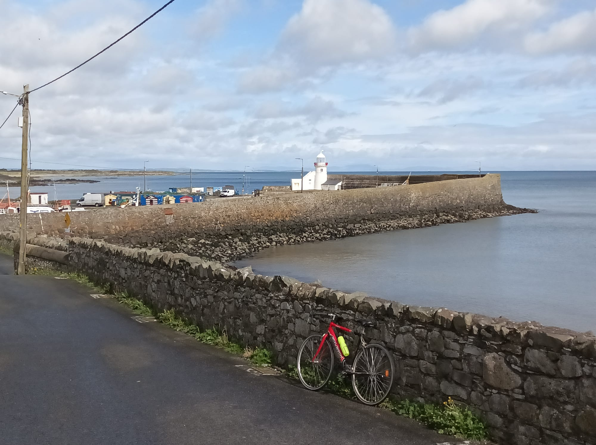

7 Balbriggan

Monday, April 10, 0857
It’s a Bank Holiday Monday and another good chance to get out on the Paul van. I haven’t been out for a big one since baby Desiree was born in February, but life is stable at home now and Sharifa is well on top of her shit. The baby has been an angel and Valentine, who’ll be six in May, is back to himself and more. In fairness to Sharifa, she hasn’t been holding me back. I just felt like I was supposed to be at home and yet that has done nothing for my mental health, especially as I already work from home, and I’ve only emerged now from what she reckons has been a week-long anxiety attack. It is something I’m gonna need help for, although I’d still rather throw cycling, writing and meditation at the problem than prozac, as long as I can, although, to be fair, I’m not always arsed. Thankfully I’m back to myself now and I’m ready to hit the Dermot and have something to write about after.
Yesterday I thought it might be time to hit Dundalk via Drogheda so I called Boring Mick and he was gaggo for it cos he was already at home in Drogheda for Easter, and he said he’d join me for the second leg. But in the end, he was up to his eyes with his insomniac toddler so I had to go out on my Tobler and find somewhere to go in the pissings of rain. I decided that it was finally time to go and explore a bit of inland North County Dublin, where my dad is from. Since I moved to Blanch, I’ve been out scoping the coastal towns from Malahide through Swords, Donabate, Rush and Skerries. Most of all I’ve been in the tiny fishing village of Loughshinney, where my mate Leonard moved to a few years back. There’s good odds that we’ll end up buying a gaff in one of those towns cos the area ticks a buncha boxes, being beside the sea and connected to the city by the train, and maybe the kids will feel like they are actually from a community, in a way that I don’t. I reckon that area will become the new South County Dublin as the city explodes North and all the towns get swallowed up, just as Blackrock and Dun Laoghaire did over the twentieth century. The question, of course, is whether we could be arsed being part of the relatively early migration.
But inland North County Dublin is a funny old place to me because my dad is from there yet I’ve never spent serious amounts of time there, beyond day trips as a kid and funeral visits in recent years, as his five brothers have all died, including four in the last five years. Thankfully their sister Monica, in her mid-eighties, is still alive and kicking, and she still brings my dad along to the races with her. The whole family had big-ticket names. Cuddie’s real name was Columbanus, the great Irish saint, and Lorenzo was named after a Vatican bigwig in the early 1930s who came to visit Ireland. There was Austin, Aidan and Oliver, which is now like the most popular baby name in Ireland and Britain, and my dad was Valentine, born twenty minutes after Valentine’s day. That was also going to be my name, but when the nurse saw Valentine Desmond written down, she pointed out to my parents that my initials would be VD - or venereal disease - so they swapped it to Desmond Valentine. In the end, we named our son Valentine, which Sharifa was up for because she and my dad get on like a house on fire. Our cat was also born on Valentine’s day but we never managed to name him appropriately, despite Maisoon’s excellent suggestion of Cupid, and the poor unnamed creature ended up being called Puddens, which is really a term of endearment. Amazingly, our daughter Desiree was due to be born on the Valentine’s day just gone, and that was when my dad told me the story about him being born a few minutes late. His mother asked the nurse to change the time of birth to match the date, but your wan said she couldn’t. The story makes me feel like less of a spoofer because people regularly ask us if our son was born on Valentine’s day, and I’ve long since given up being like “Almost. His grandfather was born the day after Valentine’s day?”
So anyway I set Google Maps for Oldtown and then Ballyboughal cos the family are from somewhere between the two, although I’ve only ever been driven there, so I don’t remember exactly where. It’s pissing rain when I leave and after about three minutes I realise that it’s also cold enough to need gloves, but instead of doubling back on myself and disrupting the fatherless breakfast party that is about to begin, I decide to dig out my spare socks. I packed minimal clothing to wear home on the presumably train but I’d much rather have wet feet on a train than cold hands on a bike. And that’s not just because I don’t give a rats about future me. There’s times where I’d rather be naked on a bike with gloves on than the other way around.
The cycle itself is fine but following Google Maps on a bike is more of a hassle than being wet and I’m all the time pulling over and taking off my glove-socks and recentreing and doing doublebackarooneys, but the trip itself is otherwise pretty mellow cos the roads are quiet and it’s just great to be out. It’s 20k to Oldtown and I barely remember it, and even Strava didn’t bother to record it. There’s moments where you’d see a bit of featureless flat farmland and think, ooh, this might be where we used to drive down to Cuddie’s or whatever, but I’m not sure. There’s a sign saying 3k to Oldtown and it’s the first time I feel emotions, but it’s actually a pang of pain about my first day in boarding school, and my sisters all being there and I think they were probably too horrified ever to go back, bar Babs who’d come and collect me sometimes at the weekend. I remember Oliver and his wife Rosaleen coming down one Sunday evening and Rosaleen was horrified by the place. It’s one of the few moments I have of adults having explicit feelings or opinions about my strange upbringing. She was always lovely and I have great memories of having fun with Suzanne and Derek, my slightly older cousins, who had a dart board and a snooker table that Santa had to leave outside.
7.1 Oldtown

Oldtown village is tiny but the church isn’t and it hits me on arrival. Cuddie was buried here and I’ve a memory of an off-kilter local fella in a high viz jacket doing his bit to herd us all from the church to the cemetery. Cuddie ran the post office and a grocery shop, and then his son Andrew became the postman for a bit. Once or twice the two of them came out to run my dad’s shop when he was away and that was gas. I can’t remember why cos me and my sisters always ran the shop ourselves when my dad was off on holidays with my mam, usually cycling the world. As I’m cycling in to Oldtown village I actually think I see Andrew, under an umbrella, and I call his name, but it’s not him, and I push down to the main crossroads where the only pub is and a pop-up coffee shop. There’s a young wan making coffee, two middle-aged ladies getting caffeinated before the races in Fairyhouse, and two possibly father-and-son barmen outside cleaning up last night’s heroics. I ask them about my family and the younger barman says they are not much of a drinking family. No one seems to know exactly where Derek’s farm is, where my dad grew up. Seemingly it is up a lane past Keogh’s, of crisps fame, and their lorries are the only sign of industry in the area. It turns out Cuddies’ wife Catherine was there for last night’s Easter events. Some kind of IRA celebration I think, but I didn’t catch the exact deets.
.jpeg)
I’ve never had a proper local pub where people know each other so it all feels alien to me and I’ve never even stayed overnight here as the cousin from the city because we lived near enough to go home in the evening, even after a few tipples. This actually explains yet another bit of my sense of displacement. So many Dublin people of my generation are the spawn of jumped-up boggers, so they would have gone down the country and put in serious time there, and many of them still do. Kilroy still hits up Enniscrone in Sligo, and Storan would hit Bantry in West Cork, or whatever. I called him yesterday and he was in mass in Ballina in Mayo, with his wife, warming up pews for Sleepy Joe’s coming visit. Even my sister Emer has been in Monaghan all weekend with her husband and their kids, who still alternate Dublin and Monaghan gaelic jerseys. I’ve never had that other place, with the brief exception of Tralee, where I used to stay as a teenager with McCornFlake, and for a couple of years when I was going out with a girl who I met through him. Even that was only serious enough to stall down for a Stephen’s Day piss-up with all the lokes, rather than a full-on Christmas. Tragically, my wife is no longer accepted by her family in Oman, since she had a kid with me, so we can’t and don’t go there. Instead, we hang out in my sister Barbara’s, who is much older than me, and has always doubled up as part-sister, part-mammy to me. I was only ten when her first son was born and seeing as they lived about a mile away, I’d stall down there whenever, and I still do. Her and her grown-up kids now provide that second layer of family to my kids and it is something that I am eternally grateful for because everybody needs a refuge, and that connection keeps us nearby more than anything. A house has come up five minutes walk from her gaff and, if we can, we’ll take it.
7.2 Ballyboughal
.jpeg)
I push on towards Ballyboughal, three clicks away, and somewhere off-route is where my dad grew up. I decide to leave that for another day and it’s nice to scope out an empty Ballyboughal without there being a funeral, and me not feeling like an outsider amongst dozens of lookalike cousins. The church is much older than Oldtown’s which makes sense cos this village is on a road to somewhere. There is a plaque on the nearby pub about some Ra lads back in 1921. I do a spin up and down village and I realise that it’s actually your classic linear drivethrough village and I think about Rob Kearney’s brother who was knocked down by a lorry aged five, crossing a road that was probably like this, and poor Gordon Cooney, our next door neighbour who died at that age, long before I was born. The road continues on to The Naul, eight lumpy clicks north, and I follow it cos Leonard said Naul Village was nice. It’s nice to have some gradient after thirty clicks on the flat, but the village is a bit of let-down, mostly cos I hate linear villages, but possibly cos it’s a Bank holiday and everything is dúnta. So I turn right for Balbriggan, another eight lumpy clicks towards the East coast. I don’t know the plan yet but I”m defo stopping there for some nosebag because I’m Hank Marvin at this stage.
7.3 Balbriggan

As I approach Balbriggan, houses start popping up and some purpose-built schools, and soon I see the boozer where we had pints after Frankie Gaffney’s dad’s funeral a few years ago. The town itself doesn’t feel like a coastal town and it turns out that the train line chops off access between the town and the sea, so you are looking at underpasses and walkways galore. On my way to the harbour, I meet functional beachgoers like dogwalkers and grannies with spadewielding grandkids, but there is not a lot of casual integration between the town and the coast, like in Dun Laoghaire, where you can’t miss the sea. I approach the harbour from the blind side, via the Prohestant church on high, and I am delighted to spot a lighthouse, as I hadn’t realised there was one here. It turns out that the Wikipedia page is split into two tables: lighthouses run by the Commissioner of Irish Lighthouses, which I had been planning to visit, and then a sundry bunch of lighthouses run by whoever. This explains why the lighthouse in Wicklow Harbour wasn’t on my list, and it’s a good thing I nipped over to it for the sake of exhaustion. That lighthouse is run by the harbour, and so is this one. I stop to ask a fella with a work van if the lighthouse is in use and he parks his disbelief before telling me it’s the second oldest functional lighthouse in the country, and that he’s after getting a new boat for himself that he’s in the process of doing up but that it’s hard to get out now with the new baby. His dad was a fisherman but he just gets out for a few mackerel now and then and they are going to clean up the harbour soon which is badly needed. He says it’s a great spot to bring up kids and that his wife is from Tallaght and they lived there for a bit but it wasn’t for him. We part ways and I push down to the lighthouse for a goo at the rusty fishing boats and an unreadable plaque stating how old the thing is.
.jpeg)
7.4 Stepping stones
I stall back up to the hipstery part of town, which may just be a single cafe and a scrannery beside the train station, and these establishments function as stepping stones between the midlands-esque town proper and the beach addendum for enthusiasts who are arsed making the short journey. I do feel very much at home in this so-called tapas restaurant serving fry ups, as the place is jammed with wankers. You’ve got a few tech workers still wearing Palo Alto t-shirts and there’s a long-haired fella here too, as well as couples with very young kids, trying to keep the brunch dream alive. The staff are all Brazilian and I’d love to map their dispersal across the country because they are a lead indicator of where the future of gentrification lies. Back in the recession they were populating your Dublin 8s and your East Walls, long before Legit Coffee and Two Pups were in serving filter coffee to broke post-grads like me. The Brazilians diffused out of town after that, and by late 2019, I had reports from students living in Ballyfermot, which I had earmarked as the new Stoneybatter, although in reality that’s Inchicore. Two years later I was one of several parents cycling my kids to the naoinra in Ballyfermot. I stopped teaching English in 2020 so I’m not privy to the latest movements of Brazilians, but if they are working in Balbriggan, you can be one hundred percent sure that the rest of us will be on the way, once the infamous scald factor has been sufficiently diluted. In the cafe opposite, I get chatting to a couple with big dogs and the lady shows me the paint on her hands because they’re doing up the three-bed they’ve just bought for 330k. She’s from Skerries and it’s too dear there for them there. I realise that Balbriggan is the poor-man’s Wicklow Town, a big-enough town on the coast, with a harbour, a beach and a train to Dublin, making it a nice option for life. Rush, Lusk, Skerries and Loughshinny are all too small and, despite being nearer to the city in terms of kilometres, the exit strategy is too difficult, as the M1 is too far away. In Rush, you have to exit from a scrum in front of your own posts, every single day. In Balbriggan, it’s only a lineout just inside your 22, and you can kick, run or maul.
-01.jpeg)
7.5 Exit Festival, Hypothermia
Nonethenevertheless, today’s exit is one of the least pleasant cycles of my life. First off I go down to scope out the beach walk, but the rain starts again, so I take refuge in a six-foot tunnel along with like twenty other people. It’s a great spot to pick up a bit of intel on the locality but I’m suffering from frozation because the cold sea breeze is being funnelled through this tiny chasm and my core is still cold from being rainsoaked earlier. I bounce before the rain dissipates but it’s just too rainy so next up I’m under a bus shelter listening to a lady telling me about her poor dad in the Mater hospital. I could take two trains home but I know I’ll need the miles in my legs, so eventually I brave it. But now the chain keeps popping off my bike cos the front derailleur is too tight and I’m not able to tweak it back into place. After about ten drops I give up and leave it in the small ring and it’s enough to keep me driving into the wind. I take a minour detour through Skerries and even get a long distance shot of Rockabill Lighthouse, just in case I couldn’t be arsed cycling back here. I drop in to the Leonards in Loughshinney for a quick hello and they suggest a back road to Lusk and then take Blake’s Cross for Ballyboughal. I do the first bit but I don’t have the emotional bandwidth for another trip down memory lane so I brave the N1 all the way Swords and it’s barely safe for cars let alone cyclists. Leonard once told me they’ll be opening up the greenway from Rush to the Donabate slash Swords estuary, and it can’t come soon enough. I scoped out that peninsula a few months back but Google Maps had me cycling over actual water so I decided to veto their suggestion. After Swords, and another torrent of rain, which I collect this time cos I just wanna get home, I have to brave the exposed roads beside the airport with winds of up to about forty clicks a Paddy. I feel like I’m in Belgium and I can see poor Tim Declercq’s grimace on my own pained face, but it’s the only way home now, and after that it’s more Google Maps through the unremarkable roads of North West County Dublin.